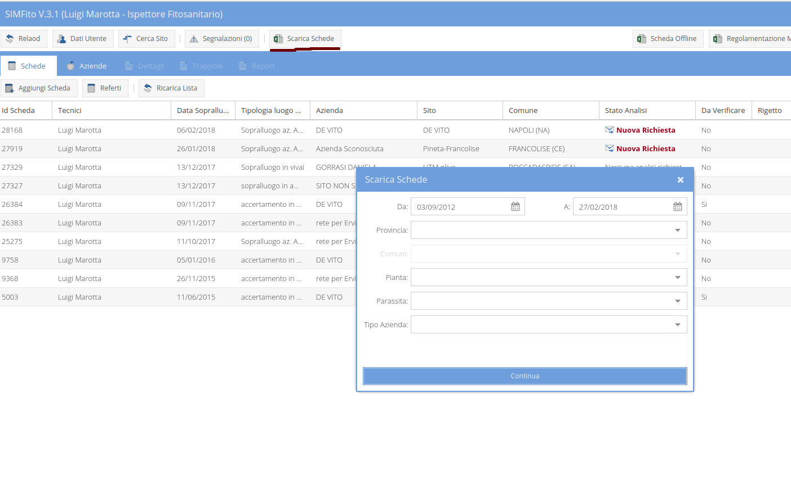

È possibile scaricare un foglio elettronico in cui siano presenti tutte le informazioni relative alle schede inviate.
Il folgio elettronico, in formato excel, può essere scaricato compilando i campi del form che compare cliccando sul tasto "Scarica Schede" nella toolbar principale dell'interfaccia utente.

I risultati vengono selezionati applicando i filtri dei campi del form che vengono valorizzati.